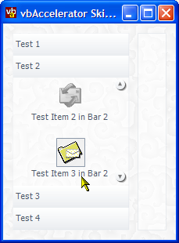

SkinnedListBar Demonstration (113K)
SkinnedListBar Demonstration (113K)
 7 Sep 2003
7 Sep 2003
First Posted
 .NET Outlook Style ListBar Control
.NET Outlook Style ListBar Control

Skinned ListBar
Create
This article demonstrates overriding the drawing routines in the Outlook Style ListBar to create a new ListBar which inherits the behaviour of the original control but draws in a much customised way.
Hooking into the ListBar Control
The ListBar control provides a great deal of customisation flexibility by allowing most of the methods to be overridden. It also exposes the methods used to create instances of internal objects such as the scroll buttons and collection objects so they too can be overridden. This sample demonstrates a very simple series of subclasses of each of the objects in the control.
Customising the Control Appearance
Most of the control is drawn by the sub-components of the control itself: the ListBarGroup, ListBarItem and ListBarScrollButton objects. That leaves the background to the items and the border around the control itself. The ListBar control leaves painting the background to the Control superclass, so you can modify it by overriding the OnPaint method (remembering to call the base implementation afterwards so the objects get drawn into the control).
The border is painted by the control's RenderControlBorder method. This sample overrides it to paint a fine, flat grey border and setting anti-aliasing on to get a smooth effect:
////// Draw a border around the control. This version draws an /// anti-aliased alpha blended thin border in a grey shade. /// /// The graphics object to drawn onto. protected override void RenderControlBorder( Graphics gfx) { gfx.SmoothingMode = SmoothingMode.AntiAlias; Pen borderPen = new Pen(Color.FromArgb(128, 214, 220, 226), 1.5F); Rectangle borderRect = new Rectangle( this.ClientRectangle.Location, this.ClientRectangle.Size); borderRect.Width -= 1; borderRect.Height -= 1; gfx.DrawRectangle(borderPen, borderRect); borderPen.Dispose(); }
Customising Group Button Appearance
ListBarGroup objects draw themselves through the DrawButton event. Subclassing the ListBarGroup and adding these to the control rather than the default objects allows you to override this method and draw it in you own style. In this skinned list bar, group buttons are drawn using a linear gradient, which has three different gradient colours depending on whether the button is normal, hot or down:
////// An extended ListBarGroup which renders with a gradient skin /// appearance. /// public class SkinnedListBarGroup : ListBarGroup { private Color[] buttonColor = new Color[6] { Color.FromArgb(255, 255, 255), Color.FromArgb(234, 237, 240), Color.FromArgb(243, 245, 247), Color.FromArgb(214, 220, 226), Color.FromArgb(214, 220, 226), Color.FromArgb(243, 245, 247) }; ... Get/Set methods for the button colors ... ////// Draws the button for this group bar onto the control. /// /// The graphics object to draw onto. /// The Font to draw with /// Whether the control is enabled or not. public override void DrawButton( Graphics gfx, Font font, bool enabled ) { gfx.SmoothingMode = SmoothingMode.AntiAlias; // Fill the background of the button: Color startColor = this.buttonColor[(int)ButtonPartColor.buttonUpStartColor]; Color endColor = this.buttonColor[(int)ButtonPartColor.buttonUpEndColor]; if (this.MouseDown && this.MouseOver) { startColor = this.buttonColor[(int)ButtonPartColor.buttonDownStartColor]; endColor = this.buttonColor[(int)ButtonPartColor.buttonDownEndColor]; } else if (this.MouseOver || this.MouseDown) { startColor = this.buttonColor[(int)ButtonPartColor.buttonHotStartColor]; endColor = this.buttonColor[(int)ButtonPartColor.buttonHotEndColor]; } Rectangle drawRect = new Rectangle(this.ButtonLocation, new Size(this.ButtonWidth, this.ButtonHeight)); LinearGradientBrush backBrush = new LinearGradientBrush( drawRect, startColor, endColor, 90, false); gfx.FillRectangle(backBrush, drawRect); backBrush.Dispose(); // Draw the text: StringFormat format = new StringFormat(StringFormatFlags.NoWrap | StringFormatFlags.LineLimit); Font drawFont = this.Font; if (drawFont == null) { drawFont = font; } RectangleF textRect = new RectangleF( this.ButtonLocation.X, this.ButtonLocation.Y, this.ButtonWidth, this.ButtonHeight); textRect.Inflate(-2, -2); if (this.MouseDown && this.MouseOver) { textRect.Offset(1, 1); } format.Alignment = StringAlignment.Near; format.LineAlignment = StringAlignment.Center; Brush textBrush = new SolidBrush(this.ForeColor); gfx.DrawString(this.Caption, drawFont, textBrush, textRect, format); textBrush.Dispose(); format.Dispose(); } ... Constructors ... }
This class now draws correctly, and you can use it immediately with the control simply by creating SkinnedListBarGroup objects and adding those to the control rather than ListBarGroup objects:
skinnedListBar1.Groups.Add(
new SkinnedListBarGroup(String.Format("Test {0}", i + 1),
subItems));
However, note that the control and in particular the methods of the Groups collection are always going to cast the object back to a ListBarGroup. Sometimes this isn't a problem; you can always cast your objects as needed. However it is also possible to replace the standard ListBarGroupCollection object with a custom one which supports your own strongly-typed classes. This is beyond the scope of this article but is achieved by creating a subclass of ListBarGroupCollection and overriding the control's CreateListBarGroupCollection method.
Customising Item Appearance
ListBarItem objects can be customised in much the same way as the ListBarGroup objects. The important thing to note is that the DrawItem routine for an item is responsible for setting two protected members that the front end uses to calculate whether the mouse is over an item or not: the iconRectangle and the textRectangle. If you do not set these then the control will probably stop responding to mouse events on items.
In this implementation the item is set to draw a coloured icon with a shadow when the item is selected or hot, and a grayed icon otherwise. The background is also highlighted by painting over with a highlight colour that is alpha blended onto the background. The code to achieve this is mostly standard, however, its worth noting the use of DrawImageDisabled to draw a grayed icon which also makes a useful shadow:
// Draw disabled icon - this is the 'shadow':
ControlPaint.DrawImageDisabled(gfx,
ils.Images[this.IconIndex],
iconX + 1, iconY + 1, Color.Black);
// Draw the normal icon over the top:
ils.Draw(gfx, iconX, iconY, this.IconIndex);
Customising the Scroll Buttons
The scroll button objects used by the ListBar control are created by the CreateListBarScrollButton function of the control. If this function is overridden, a new subclass of the button can be returned which itself can use a customised drawing routine:
////// Creates a new instance of a SkinnedListBarScrollButton used by this control /// to draw the scroll buttons. Fired during control initialisation. /// /// The type of scroll button (Up or Down) /// to create ///A new ListBarScrollButton which is drawn when a ListBar /// contains more items than can be displayed. protected override ListBarScrollButton CreateListBarScrollButton( ListBarScrollButton.ListBarScrollButtonType buttonType) { return new SkinnedListBarScrollButton(buttonType); }
As usual, the DrawItem method is the one to override to draw the control in a customised style. This provides the graphics object to draw onto, the default background colour and whether the control is enabled or not. In this sample the button is drawn as a circular object with an alpha-blended drop shadow. Firstly, anti-aliasing and half-pixel offsetting are turned on for the graphics object. Then to draw the drop shadow, circles with decreasing opacity are drawn. To provide a button depressed, a two pixel shadow is drawn when the button is up but only a single pixel when it is down:
// Anti-alias for smoothness
gfx.SmoothingMode = SmoothingMode.AntiAlias;
// And half pixel offsetting
gfx.PixelOffsetMode = PixelOffsetMode.Half;
// Get the rectangle to draw the button into:
Rectangle drawRect = this.Rectangle;
drawRect.Width -= 4;
drawRect.Height -= 4;
// Draw a shadow:
Rectangle shadowRect = new Rectangle(
drawRect.Location, drawRect.Size);
shadowRect.Offset(1, 1);
SolidBrush shadowBrush = new SolidBrush(Color.FromArgb(128, Color.Black));
gfx.FillEllipse(shadowBrush, shadowRect);
shadowBrush.Dispose();
if (!(this.MouseDown && this.MouseOver))
{
shadowRect = new Rectangle(
drawRect.Location, drawRect.Size);
shadowRect.Offset(2, 2);
shadowBrush = new SolidBrush(Color.FromArgb(64, Color.Black));
gfx.FillEllipse(shadowBrush, shadowRect);
shadowBrush.Dispose();
}
Next the button is drawn over the top. A gradient from top to bottom of the button gives it an enhanced '3D' appearance:
// Fill the background of the brush:
LinearGradientBrush backBrush = new LinearGradientBrush(
drawRect, startColor, endColor,
90, false);
gfx.FillEllipse(backBrush, drawRect);
backBrush.Dispose();
Finally, the button glyph (a triangle) is drawn over the top using a GraphicsPath object.
Conclusion
This article demonstrates customisating most aspects of the appearance of the ListBar control. Even if you're not using the control, you can use the same graphics techniques to create other UI features.